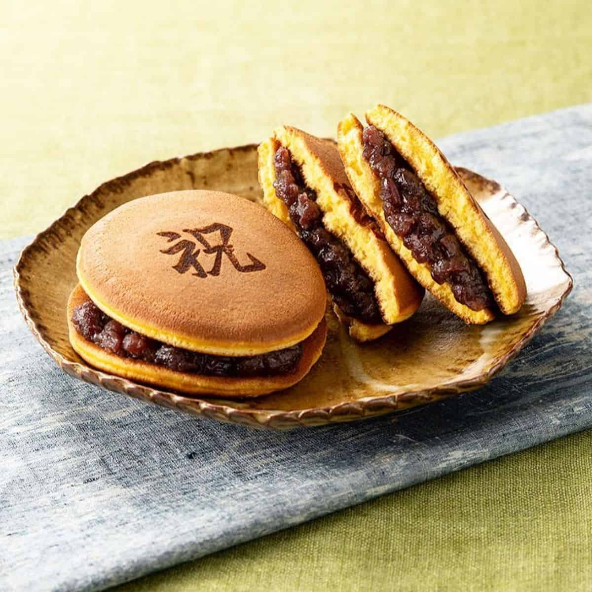
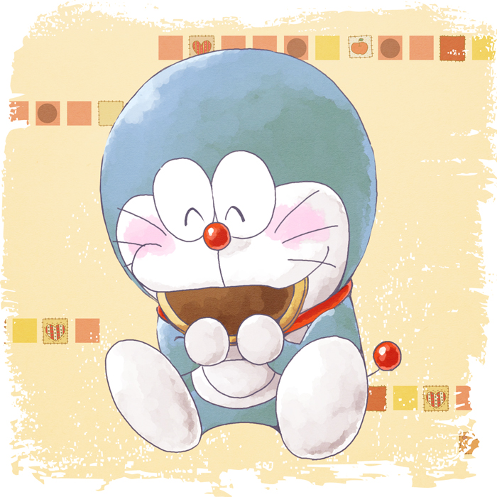

Dorayakis

Description
Doraemon's favourite! Little me always thought the cakes were filled with Nutella.
A classic Japanese confection, Dorayaki is a honey pancake sandwich filled
with a red bean paste. It’s wildly popular amongst children and adults
alike in Japan.
Ingredients
- 4 large eggs (50 g each w/o shell)
- ⅔ cup sugar
- 2 Tbsp honey
- 1⅓ cup all-purpose flour
- 1 tsp baking powder
- 1-2 Tbsp water
- neutral-flavored oil (vegetable, rice bran, canola, etc.)
- 1.1 lb sweet red bean paste
Steps
- In a large bowl, combine the eggs, sugar, and honey. Whisk well
until the mixture becomes fluffy.
- Sift the flour and baking powder into the bowl with the egg
mixture and mix until combined. Put the bowl in the refrigerator
to rest the batter for 15 minutes.
- After resting, the batter should be relaxed and slightly smoother.
Now, stir in half of the water and check the consistency.
Add more of the measured water until you reach a pancake batter
consistency.
- Heat a large nonstick frying pan over low. When the pan is thoroughly
heated, increase the heat to medium low. Dip a paper towel
in the vegetable oil and coat the bottom of the pan with the oil.
Then, use another paper towel to remove the oil completely.
With a ladle or a small measuring cup, pour 3 Tbsp of the batter from 3 inches (8 cm) above the pan to create a
pancake that's 3 inches (8 cm) in diameter. Cook one pancake at a time.
- When you see the surface of the batter starting to bubble,
flip the pancake over and cook the other side.
When done, transfer it to a plate and cover it with a damp towel to
prevent it from drying out. Grease the pan between batches.
- Assemble the Dorayaki by making a sandwich using two pancakes and
the sweet red bean paste as filling. Put more red bean paste
in the center so the shape of the Dorayaki will be curved. Wrap the Dorayaki with plastic wrap until ready to serve.

"Delish, delish, dorayakis"
Recipe credits to - Dorayaki - Just One Cookbook